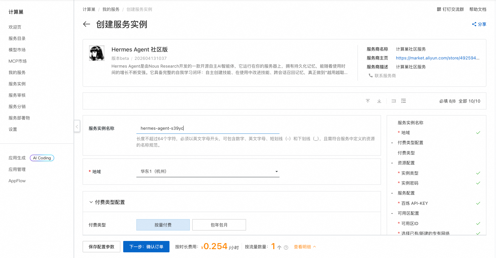
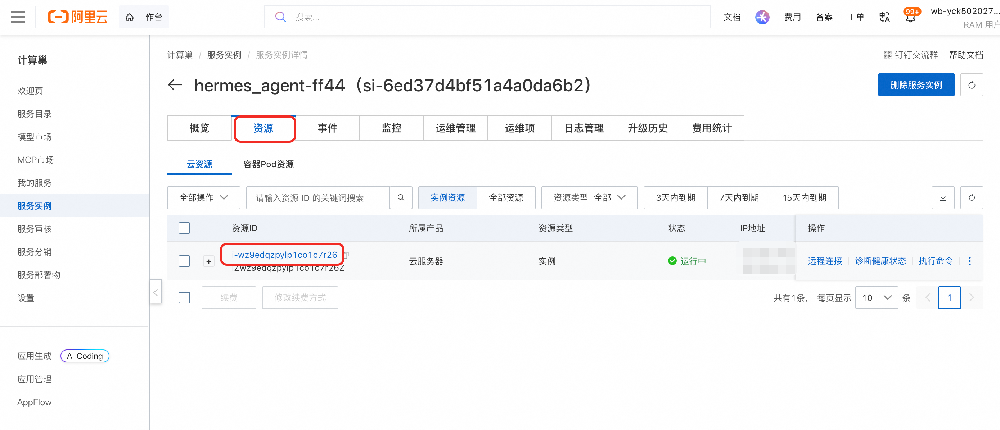
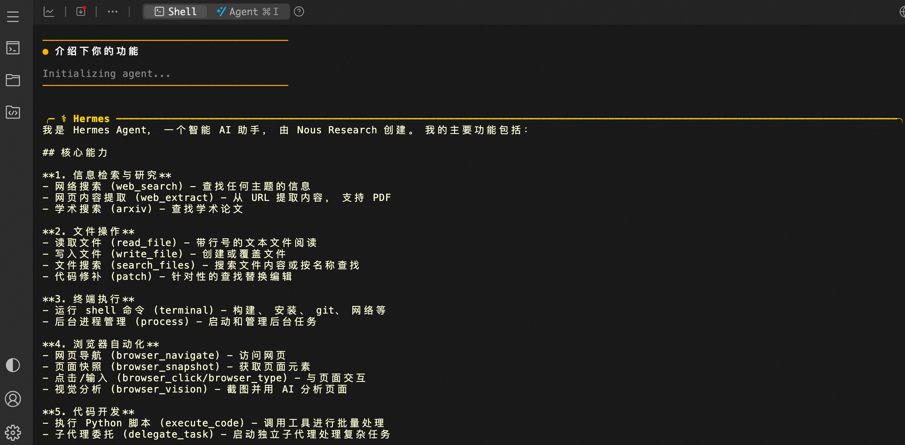

🤖 HermesAgent 服务简介
2026年4月，Nous Research 震撼发布 Hermes Agent —— 一款真正“活”着的开源智能体。 告别碎片化的聊天机器人，Hermes Agent 运行于你的私有环境，拥有持久记忆与自我进化能力。它能自主创建技能，从每次交互中学习，并在未来的任务中完美复用经验。 一次部署，持续进化。Hermes Agent，越用越懂你。
🚀 部署流程
-
访问计算巢 HermesAgent 社区版 部署链接，按页面提示填写部署参数：

-
参数配置完成后，系统将自动生成费用预估明细。确认无误后点击 下一步：确认订单。
-
在订单确认页，核对实例信息与费用，点击 立即创建 开始自动部署。
-
部署完成后远程链接ECS。资源>资源ID>ECS详情页>远程连接>通过Workbench远程连接：


-
执行命令与HermesAgent进行交互。
shell sudo su root hermes

📚 使用指南
配置频道请参考 HermesAgent 官方文档 。
© 2009-2022 Aliyun.com 版权所有